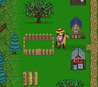
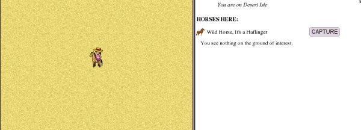
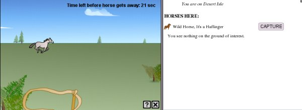

Horse Isle is the home to literally thousands of horses of many different breeds, sizes, types and colors. Once you have arrived on Horse Isle, the first thing you'll want to do is get a horse of your own. Before you can do this, though, you will need money to buy it, tack it up, get it groomed and shod and keep it fed, watered and healthy. Just as in real-life, horse-keeping is not inexpensive!
Acquiring a Horse
There are several ways to acquire a horse on Horse Isle.
Leasing. If you are a brand new player, this is probably the best option for you, until you earn a bit of money. There are two hack stables (also known as livery stables, rental barns and so on, depending upon where you live) on Horse Isle: one in the town of Earton (the first town you will encounter when you debark the boat from Welcome Isle), and one in Appleton, a town on the southern end of Horse Isle.
Leasing stables look like small paddocks (at left), and will rent out a horse for one game day (2 real hours) for a nominal fee. These horses are already tacked up, groomed and shod; but since they are not your own, you may not enter competitions with them, nor shoe nor do many of the other things you can do with a horse of your own. Also, when you lease, you lease whatever breed of horse is available; you do not get to choose. So consider wisely whether you would like to lease a horse at first, or save your money to buy one of your own (remember that you will need to buy tack as well before you can ride).
Buying directly from another player. Players have horses for sale all the time, and these will be of all breeds, colors and sizes—and ranges of experience and training. Watch the chat windows to see who is selling what. Prices for horses vary considerably, but on the whole, the more training a horse has (the "higher its stats" as players will say) the more expensive the horse. Some breeds, such as the Thoroughbred, are always very expensive to buy. Other breeds are extremely expensive to buy when the breed has just been introduced; but if you wait a few weeks, the prices invariably plummet as Dame Fashion turns her attention elsewhere.
Buying a horse at Auction. There are numerous auction blocks on Horse Isle, but the ones in Earton are by far the most popular. No direct negotiations with owners are needed at the auction; just don't get carried away and bid more than you can afford!
Catching a wild horse. Wild horses are rare in the Isles, but generally a player can find one or two a day. Different players have "favorite islands" for catching wild horses, and some breeds can only be found in some areas: Arabians, Akhal-Tekes and Australian Brumbies can only be found in the desert; Norwegian Fjords, Icelandics and Exmoors can only be found on snowy isles; Mules are only in forests, and Pasos only in Jungle. Other breeds can be found randomly on any isle, and in Horse Isle, no breed is rarer than any other.
When you come upon a wild horse, you will see a notification in the Dialog Window telling you that you have found a horse, and the breed the horse is. You cannot know what gender or color the horse is until you have caught it.
To catch the horse, click the capture button. A Mini-Game will appear on the screen.
In order to catch the horse, use the mouse to pull out and position the noose around the horse's neck. Some players feel that it's easiest to "throw" the rope in front of the horse and let him run into it. Releasing the mouse button captures the horse, if the horse and rope are both in the proper position.
Wild horses are wily! They run slow and then fast, they switch back and then switch back again, they spin, stop and run. And the rope will not stay stretched out more than a few seconds! It can be difficult to catch a wild horse, but with some practice you'll become an expert!
Unless the horse is one that another player has released, it will have no experience points. This means it will buck you off when it gets frustrated. As in real life, just get right back on! A horse gets one experience point each time it bucks, and it will stop bucking when it reaches 25.